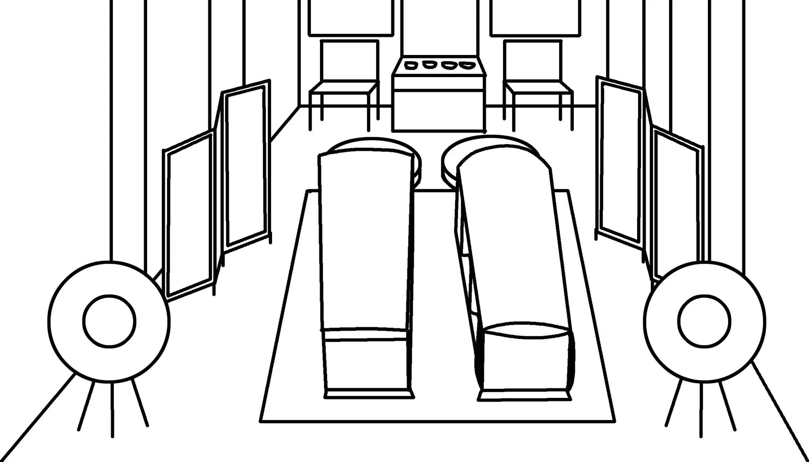
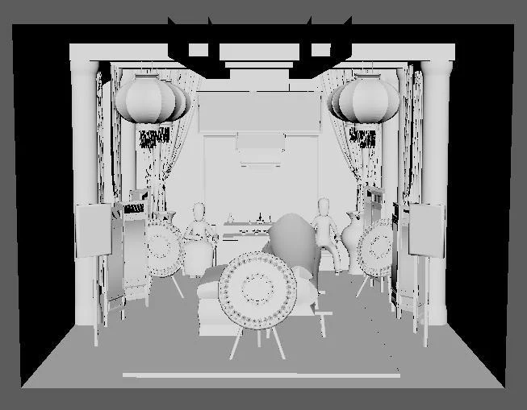
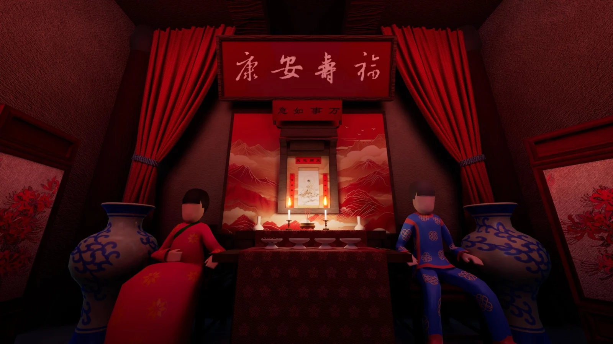

Ghost Marriage
从前期构图、模型与材质，走到引擎中的场景灯光与最终渲染。
- 作品类型
- 3D 场景美术
- 模型
- Maya
- 材质
- Substance 3D Painter
- 渲染
- Unreal Engine
01 / 婚礼与葬仪并置的空间

以中国传统民俗中的“冥婚”为题材，将传统婚礼与葬仪的视觉元素放在同一空间内，通过家具、仪式物件、色彩与灯光建立场景氛围。
02 / 从草图到引擎渲染


| 阶段 | 原作品记录 |
|---|---|
| 前期构图 | 使用 Photoshop 整理场景，组合仪式元素与中式家具。 |
| 模型制作 | 使用 Maya 创建模型与场景灰模。 |
| 材质制作 | 在 Substance 3D Painter 中烘焙与绘制。 |
| 最终呈现 | 在 Unreal Engine 中处理灯光与效果。 |
03 / 场景细节

通过同一场景的不同视角展示整体空间与局部陈设。